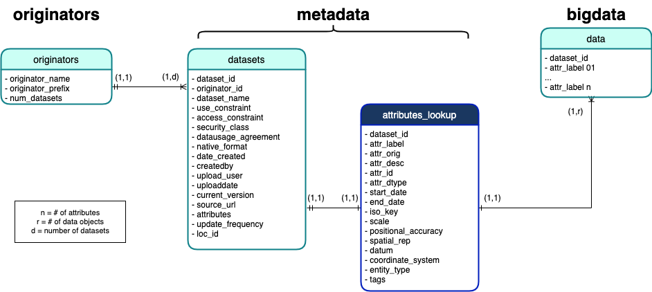
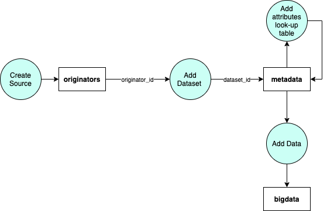
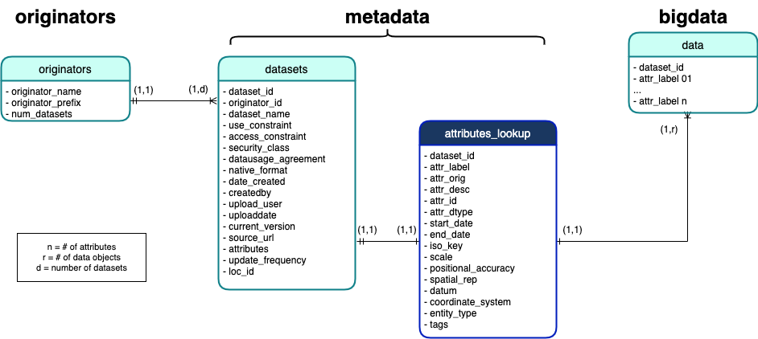
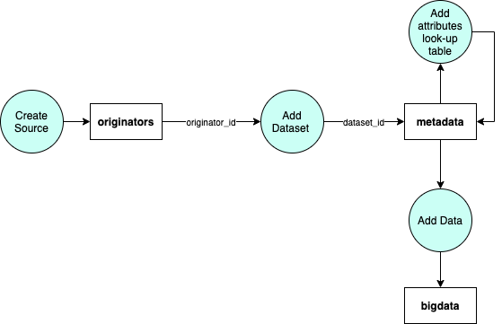

TABLE OF CONTENTS
METADATA DATABASE


originators
metadata
attributes look-up object
bigdata
DESCRIPTION
The metadata database consists of 3 main collections: originators, metadata, and bigdata.

The flow of the metadata database starts at the originators collection. A source must be added to "originators" before a dataset can be added to "metadata".
When a source is added to "originators", a unique originator_id is generated.This ID will be used to create unique IDS for datasets and data attributes (refer to naming convention section below).
When a dataset is added to "metadata" it receives a dataset_id. An attribute look-up object is then added to the dataset object as the field "attributes". Data that will be added to
the bigdata table will use the attributes look-up table to set attribute field names in "bigdata".

NAMING CONVENTION
dataset id : originator id _ nth dataset _ version number
attribute label: originator id _ nth dataset _ version number _ mth data attribute
attribute label: originator id _ nth dataset _ version number _ mth data attribute
DESCRIPTION OF FIELDS
originators
| Field | Description |
|---|---|
| originator_id | Unique 8-digit UUID used to identify a data source |
| originator_name | Name of data source |
| num_datasets | Number of datasets that belong to the datasource currently in GeoARK bigdata collection |
metadata
| Field | Description |
|---|---|
| dataset_id | Unique ID to identify dataset |
| originator_id | ID of the dataset's data source |
| dataset_name | Name of the dataset |
| use_constraint | - |
| access_constraint | - |
| security_class | - |
| datausage_agreement | How data source would like to be referenced |
| native_format | Format of data when downloaded from source (ex. csv file) |
| date_created | Date that dataset was added to metadata collection |
| createdby | Username of user who created dataset in system |
| upload_user | Username of user who last modified dataset information in "metadata" or data in "bigtable" (initially this will match the createdby user, however if the dataset metadata or data is changed, this field will be updated to the user who modified the data entries |
| upload_date | Date that dataset metadata or data entries were modified/updated |
| current_version | Boolean field that indicates if current dataset is the most recent dataset |
| source_url | Link to source of data |
| attributes | Field that holds the attributes look-up table |
| update_frequency | How often data is frequently updated (ex. some datasets are updated daily) |
| loc_id | the attribute field that is used to map data to certain state/county/tract (ex. county fips ). This field is chosen after data is uploaded into the system and receives its attribute field name. |
attributes look-up object
| Field | Description |
|---|---|
| dataset_id | ID of dataset that attribute belongs to |
| attr_label | Field name of attribute in the bigdata collection |
| attr_orig | Original column name of attribute (from dataset) |
| attr_desc | Description of attribute |
| attr_id | Flag field to indicate if attribute is a location type field such as county fips (refer to attribute look-up template tutorial) |
| attr_dtype | Flag field to indicates if a specific attribute in the dataset has a special data type that needs to processed pror to being added into the database (ex. datatime field) (refer to attribute look-up template tutorial) |
| start_date | Range of data |
| end_date | Range of data |
| iso_key | ISO category tag used to categorize data |
| scale | - |
| positional_accuracy | - |
| spatial_rep | - |
| datum | - |
| coordinate_system | - |
| entity_type | Geographic level of data (state, county, tract) |
| tags | Keywords used to describe attribute that can be used for filtering |
bigdata
| Field | Description |
|---|---|
| dataset_id | ID of dataset that data attribute belongs to |
| attribute label | Attribute ID/field of data attribute |